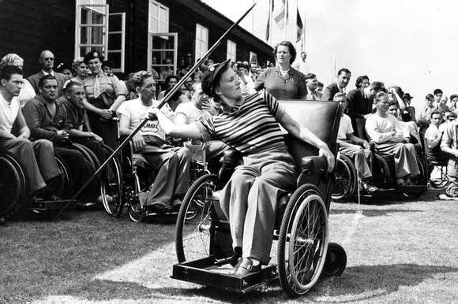

Classificação dos atletas
Para participar, os atletas devem possuir deficiências físicas ou sensoriais, como amputações, paralisia cerebral, cegueiras e deficiências mentais. As modalidades são adaptadas de acordo com as deficiências O grau de deficiência dos atletas faz com que as categorias sejam divididas em:
- paraplegia – PP
- amputados – AM
- deficientes visuais – VI
- paralisia cerebral – PC
- deficiência intelectual – IN
- Les autres – deficiências não abrangidas pelas outras categorias – LA
Principais Modalidades
Atualmente são consideradas 24 modalidades paraolímpicas, temos como principais:
- Atletismo
- Basquete com Cadeira de Rodas
- Ciclismo
- Esgrima com Cadeira de Rodas
- Futebol de 5
- Futebol de 7
- Levantamento de Peso
- Hipismo
- Judô
- Natação
- Parabadminton
- Paracanoagem
- Tae-kwon-do
- Remo
- Tênis de Cadeira de Rodas
- Vôlei
História das Paraolimpíadas
Com o fim da 2ª Guerra Mundial muitos soldados mutilados começam a praticar esportes entre eles basquete, atletismo, natação. Na Inglaterra, o neurologista e neurocirurgião alemão Ludwig Guttmann, que cuidava de pacientes vítimas de lesão medular ou de amputações de membros inferiores, teve a iniciativa de fazer com que eles praticassem esportes dentro do hospital.
Em 1948, o neurocirurgião aproveitou os XVI Jogos Olímpicos de Verão para criar os JogosDesportivos de Stoke Mandeville. Apenas 14 homens e duas mulheres participaram. Já em 52, os Jogosde Mandeville ganharam projeção, contando com a participação de 130 atletas portadores dedeficiência tornando-se uma competição anual.
Em 1958, quando a Itália se preparava para sediar as XVII Olimpíadas de Verão, Antonio Maglia, diretor do Centro de Lesionados Medulares de Ostia, propôs que os Jogos de Mandeville do ano de 1960 se realizassem em Roma, após as Olimpíadas. Aconteceram então os primeiros Jogos Paraolímpicos, as Paraolimpíadas contando com a participação de 240 atletas de 23 países.
Com o sucesso dos jogos o esporte se fortaleceu e fundou-se a Federação Mundial de Veteranos, a fim de discutir regras e normas técnicas. E nas Olimpíadas de Seoul as paraolimpíadas foram definidas para acontecerem nas mesmas cidades onde as Olimpíadas ocorressem de 4 em 4 anos.
Brasil, uma Potência nas Paraolimpíadas
O Brasil uma vez em Atenas competiu em 13 das 19 modalidades esportivas disputadas e obteve o 14º lugar, com 14 medalhas de ouro, 12 de prata e 7 de bronze, totalizando 33 medalhas.
O Brasil levou a maior delegação para competir em Atenas de todos os tempos, com 98 atletas, 77homens e 21 mulheres. Os atletas brasileiros nos jogos paraolímpicos bateram o recorde de medalhasse comparado com os atletas que participaram das olimpíadas de 2004.
O país também já ultrapassou México e passou a ser a terceira potência das Américas nos Jogos, atrás apenas dos Estados Unidos e Canadá. Outro grande feito é que as vitórias brasileiras dão ao país o título de Potência Paraolímpica Mundial.